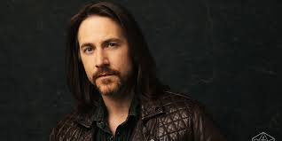

Hannah Barnes first played Dungeons and Dragons in middle school. After
taking many years off, she discovered the interest again and began to
listen to actual play podcasts, using this to hone her knowledge of the
game. After playing in a mini game called a one shot, Hannah embarked on
her D&D Dungeon Master journey. She has game mastered several times,
narrating and guiding gameplay for her table of players.
Hannah
specializes in beginner level one shots, introducing new players to the
game in a low investment and low commitment environment. She aspires to
play on an actual play podcast someday, as well as continuing to act as a
Dungeon Master. Hannah’s greatest role models for game mastering are
Brennan Lee Mulligan and Matthew Mercer.
Mulligan is the dungeon master for Dropout TV’s role table top role-playing game show Dimension 20, and was Hannah’s first introduction back into the world of Dungeons and Dragons. His mastery of guiding the players and creating entertaining non-player characters inspires Hannah to continue to practice her character creation skills.
Matthew Mercer is the dungeon master for arguably the most famous Dungeons and Dragons actual play show to date: Critical Role. Mercer, as a professional voice actor, excels at creating character voices for his non-player characters, resulting in an entertaining and immersive experience for his table of players. His skill in world building gives every other game master a run for their money, creating a world so detailed and cohesive that it is available for sale from leading Dungeons and Dragons material retailer D&D Beyond.